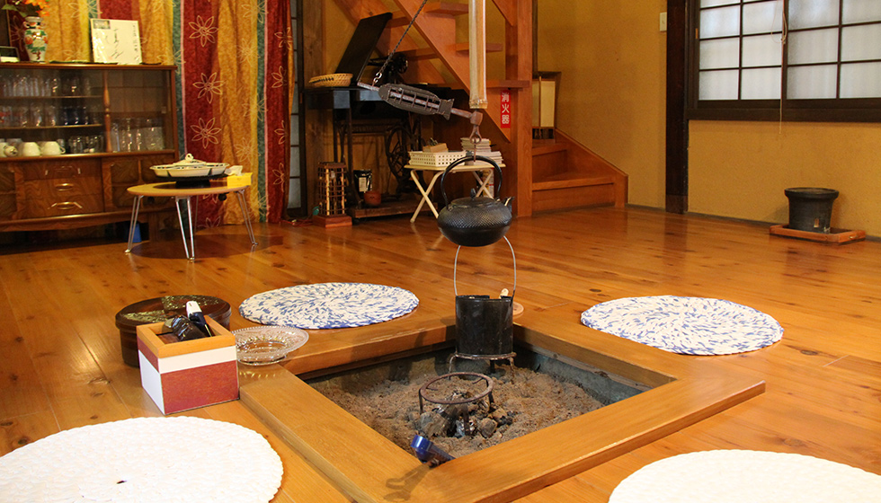

起源
在日本被指定為傳統工藝品的南部鐵器，是以盛岡市為中心的地區，以及距離盛岡市區約60公里南部的奧州市水澤區為主所生產的鑄鐵製品，稱為南部鐵器。
以盛岡市為中心原屬於在江戶時代治理過的南部籓，歷代籓主把茶湯釜和鐵壺作為重要的工藝製品，從京都及甲州招聘了很多具有高超手藝的工匠，南部鐵器中的『南部』便由此而來，並沿用至今。
另一方面以奧州市水澤區為發源的鐵器文化，始於平安時代，據說奧州藤原氏的祖先藤原清衡從近江國招聘鑄物師，以製作兵器、佛具開始，之後發展到製作鐵鋤等農器具及日常用品茶壺等而興盛起。江戶時期水澤的伊達籓（又稱仙台藩）與盛岡的南部籓有了不同的政治區分，於昭和時代統一稱為南部鐵器。
因岩手有著得天獨厚的優質鐵礦資源及工匠們精湛的工藝技法，南部鐵器就成為當地特產，名流間交流的貴重禮品。
